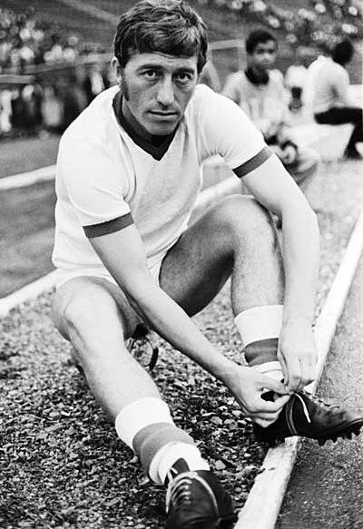
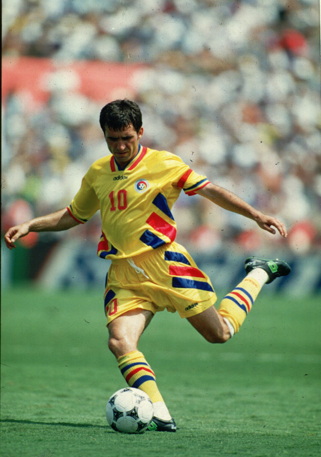
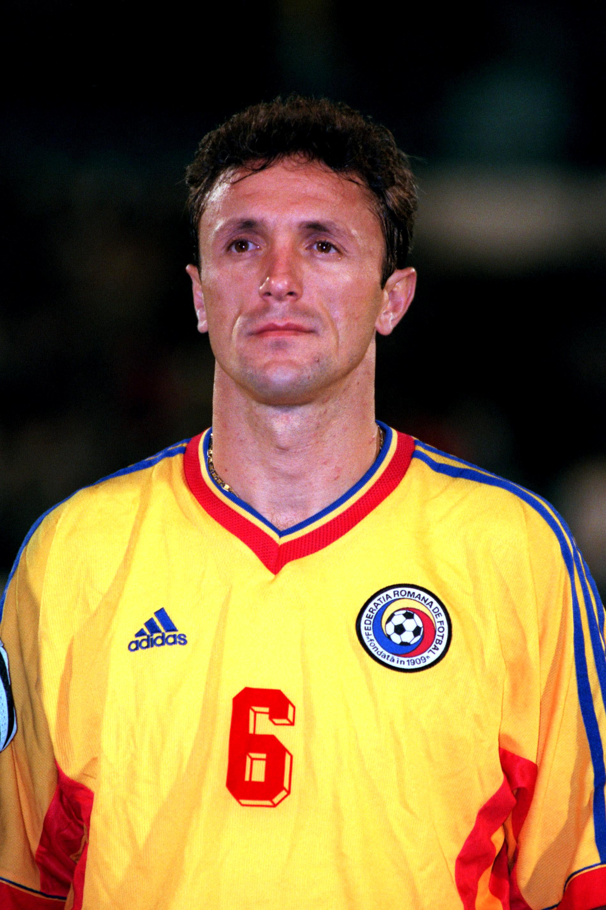
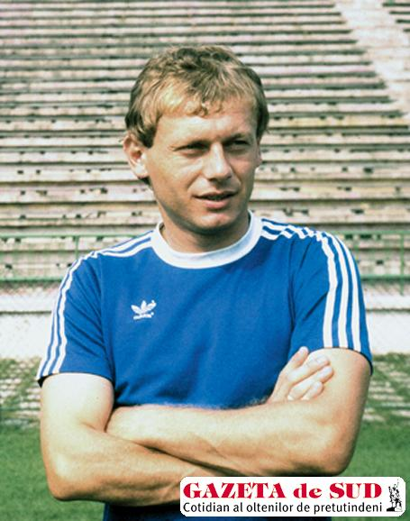

Totul despre fotbal

Legende ale fotbalului romanesc
Nicolae Dobrin "Gascanul"
Nicolae Dobrin (n. 26 august 1947, Pitești - d. 26 octombrie 2007, Pitești), cunoscut și ca Gâscanul sau Prințul din Trivale, a fost un fotbalist și antrenor român de fotbal. Istoria fotbalului românesc îl reține ca unul din cei mai mari fotbaliști români, un maestru al driblingului și al fentei, un model în executarea paselor și a loviturilor libere.[1] A fost ales de trei ori cel mai bun fotbalist al României, în anii 1966, 1967 și 1971..Mai mutlte aici..
Gheorghe Hagi
Gheorghe Hagi (n. 5 februarie 1965, Săcele, Constanța) este un fost fotbalist român, antrenor și om de afaceri, supranumit "Regele fotbalului românesc" sau "Maradona din Carpați". Este cel mai bun marcator din istoria echipei naționale de fotbal a României, pentru care a înscris 35 de goluri, record pe care îl împarte cu Adrian Mutu. A activat 19 ani în fotbalul profesionist, la nivel de club adunând 513 meciuri și 237 de goluri, fiind considerat cel mai bun fotbalist român al secolului trecut.Mai mutlte aici..
Gica Popescu
Gheorghe Popescu, cunoscut mai ales ca Gică Popescu (n. 9 octombrie 1967, Calafat) este un fost fotbalist român, actualmente impresar, și președinte de onoare la FC Chindia Târgoviște .A participat cu echipa națională de fotbal a României la trei turnee finale ale Campionatelor mondiale (1990, 1994 și 1998) și la două ale Campionatelor europene de fotbal (1996 și 2000). De-a lungul carierei a jucat la FC Universitatea Craiova, Steaua București, PSV Eindhoven, Tottenham Hotspur, FC Barcelona, U.S. Lecce, Galatasaray S.K. (cu care a câștigat Cupa UEFA în 2000), SV Hannover 96 câștigând 13 trofee.Mai mutlte aici..
Ilie Balaci "Minunea galbena"
Ilie Balaci (n. 13 septembrie 1956, Bistreț, județul Dolj), este un fost jucător de fotbal din România și actual antrenor. Supranumit și „Minunea blondă”, Balaci este unul dintre cei mai mari jucători români de fotbal. Cariera sa de fotbalist se leagă de marile succese obținute de Universitatea Craiova la începutul anilor 1980. Din păcate, a avut un final prematur de carieră, din cauza deselor accidentări. Cea mai gravă dintre ele, care practic a pus punct carierei de fotbalist a lui Balaci, a fost provocată de fundașul băimărean Vasile Arezanov, într-un meci de campionat, jucat la Baia Mare, la 21 februarie 1984.Mai mutlte aici..